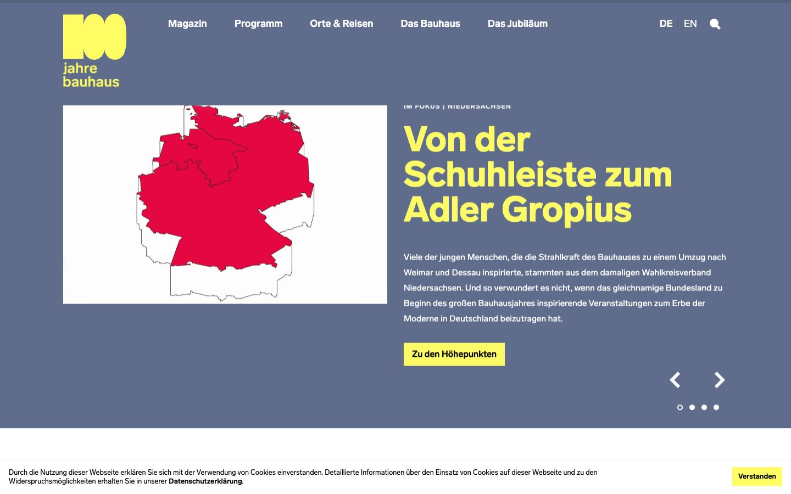

References / Website / 13
Bauhaus100 centenary website, 2019
The official website of the Bauhaus centenary year, as archived in February 2019.
- Source
- bauhaus100.de (archived copy)
- Creator
- Bauhaus Verbund 2019
- Made
- 2019
- Style
- Bauhaus (revival; agent-proposed, not yet reviewed by a person)
- Moods
- Bold, institutional, geometric
- Evidence
- Captured from the Internet Archive with
tools/capture.mjs(headless Chrome, 1440 × 900) on 25 September 2026 and inspected. The archived page may lack some images or scripts that the live page had. A cookie bar appears at the bottom. - Reviewed
- Rights
- Third-party work, stored with credit for commentary. License: unverified. Rights policy
Observed
- A flat slate-blue field fills the page behind the content.
- The logo is a blocky yellow 100 above lowercase “jahre bauhaus” in a geometric sans-serif.
- The headline is set in heavy yellow sans-serif. A flat yellow button carries black text.
- The slide image is a map of Germany with one state in flat red.
- Navigation is white sans-serif. Slider arrows and dots are plain white.
Why it belongs
The revival keeps the lowercase logotype, flat primary accents, and heavy sans-serif, but places them on a muted blue-gray instead of paper white. That muted ground is a 2010s choice, not a Bauhaus one.
Measured
Machine-extracted by tools/extract-traits.js on . Full measurement.
- Type families
- Lab Grotesque (95%), Lab Grotesque Bold (2%), Lab Grotesque Black (1%)
- Type scale ratio
- 1.33
- Median radius
- 0 px
- Mean chroma
- 0.11
- Palette
- #ffffff 43%
- #5c6a8a 23%
- #000000 11%
- #f2f2f2 11%
- #fffc64 11%

